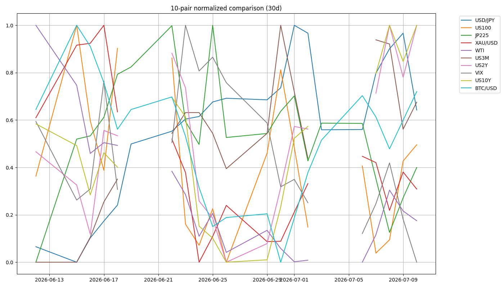
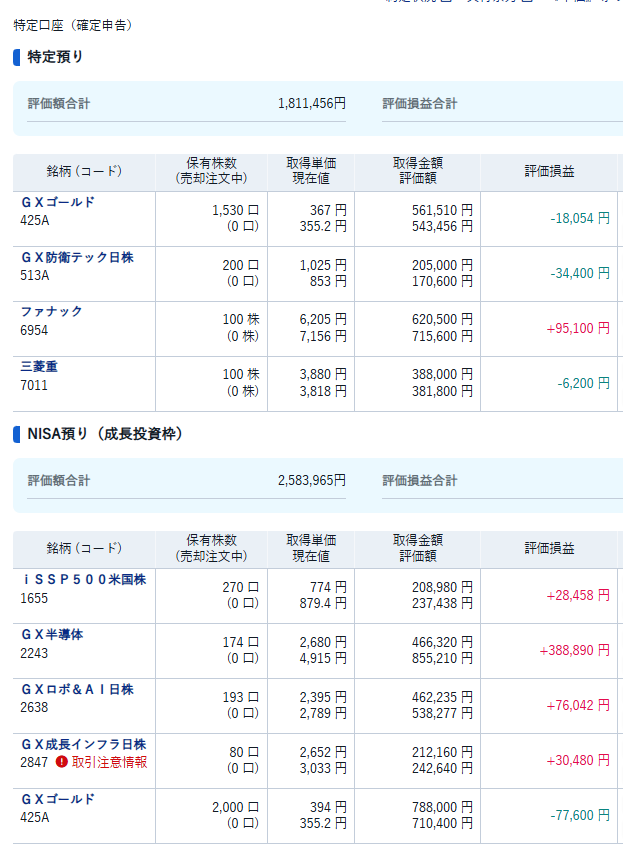

📉 CFD戦略ブリーフ — 7/13週
対象週: 2026-7-10_wk02（データ期間 2026-07-06→07-10 / snapshot 2026-07-12） ｜ ソース: review・meta・snapshot・boss市況(wr-2026-7-10)・--trade --news
Regime: Neutral（Equities Down→転換）
Add risk gate: 開放継続（VIX 15.03<18）
Reduce: caution（VIX18/介入/ホルムズ/銀行決算/三角）
boss主筋=寄り天→調整／為替レンジ ｜ 最大イベント=7/14銀行決算 ｜ 金CFD Total 1.5pips @4104.5
1. パネル 30日スナップショット
| 銘柄 | 最新 | 30日% | wk01→wk02 |
|---|
| US100 | 29,825.1 | +0.64% | +1.7%（Neutral化） |
| JP225 | 68,557.7 | +3.84% | -1.7%（押し目局面） |
| USD/JPY | 161.672 | +0.96% | +0.335（watch帯） |
| 5Y(^FVX)※真の2年債はboss実測4.21% | 4.308 | +2.25% | +0.178（利上げ警戒） |
| US10Y | 4.569 | +1.83% | +0.197（yields=rising） |
| XAU/USD | 4,104.1 | -2.63% | -83（CFD entry近傍） |
| BTC/USD | 64,127.1 | +0.92% | +4.3% |
| WTI | 71.410 | -15.87% | +2.63（oil=range） |
| VIX | 15.030 | -14.99% | -1.12（gate開放） |
curve: 5s10s +26.1bp stable ／ 3m10s +87.4bp positive ／ belly_elevated ／ intervention=watch ／ jp_rs=mixed（fx_adj +2.2pt）
8ペア30日 正規化プロット

2. レジーム & ゲート状況
機械レジーム
Neutral
equities=flat / vol=normal / oil=range / gold=off / crypto=range / yields=rising
wk01 Equities Down から転換
Add risk ゲート
開放継続
VIX 15.03 < 18。低ボラ継続だが銀行決算・地政学でスパイク余地
Reduce risk ゲート
caution
VIX18再上抜け / ドル円介入フラッシュ / ホルムズ継続 / 銀行決算失望 / US100三角下抜けで発火
3. シナリオ（3分岐）
A. 寄り天→調整 + 銀行決算上振れ（boss主筋）午前天井→戻り売り。7/14が上振れ変数
B. 利上げ警戒 × 金利上昇継続Williams系 + CPI/PPI強 → 株・金の上値抑制
C. 地政学再点火--news: 空爆再開・ホルムズ閉鎖 → 原油上振れ/株フラッシュ
金曜Bossは「イランリスク後退」。土日--newsは再エスカ。時間差を混同せず、来週は別レイヤーで監視。高値追いは抑制。
4. CFD 銘柄別アクションプラン
US100 (NAS100) 寄り天→戻り売り
金曜は半導体主導で上昇（NDX+1.3%）も、boss主筋は寄り付き〜午前を天井とした戻り売り。日足三角持ち合い形成中。「下落相場になりそう」とやや弱気。月曜以降は上に走らずレンジなら上抜け注意、素直に上げれば戻り売り。最大変数は7/14銀行決算。
最新=29,825 ／ wk01比 +1.7% ／ 高値追い抑制 ／ 旧29,089帯は深押し時の参考
JP225 (日経) 押し目拾い
下がっても上がる強さ。月曜は午前上昇→午前天井視野。67,000台後半からの下落フロー利用＋押し目約67,358。設備投資（ファナック/安川/ディスコ/デクセリアルズ等）とテック優位。実測68,558は週次-1.7%でも30日+3.8%。
最新=68,558 ／ 押し目≈67,358 ／ RS=mixed（fx_adj+2.2pt） ／ 実測優先・boss押し目はシナリオ参考
USD/JPY watch帯・不意打ち介入
約20pips狭いレンジでの反発上昇の流れ。最大テーマは不意打ち円買い介入。円安材料出尽くし＋介入で数円の円高が近い注意。CPI/PPI弱→円高、そうでなければ円安加速。実務は水平線手前の早め利確・分散エントリー。
最新=161.672 ／ zone=watch（≥161.5） ／ ammo=1 ／ stage=meeting_held ／ upper_alert=false
Gold (XAU) 押し目買い・CFD 1.5pips
日足下落トレンド内で4H底堅さ＝上昇バイアス。4138超でカップ・ウィズ・ハンドル→4175、押し目4080。順張り・押し目買い。
CFD：7/11 0:15 1H上昇波Fibo38.2下髭実体収納後の1m3波 $4104.5 で +0.5pips → Total 1.5pips 週持越し。日足環境・4Hトレード足スウィング継続。
最新=4,104.1 ／ 上=4,138→4,175 ／ 押し目=4,080 ／ 決済=4Hダウ崩れ→15m実体確定 ／ 当週確定クローズ0
WTI 両サイド・地政学
Boss金曜：イランリスク後退で72前半反落も未収束→再上昇余地。72.17超→73.63 / 71.23割→69.78。--news(7/12)は空爆再開・ホルムズ閉鎖で上振れプランを厚めに監視。
最新=71.41 ／ oil=range ／ ヘッドライン次第の両建て発想
BTC/USD 慎重・戻り売り寄り
レンジで上は分からない/下落相場の慎重見立て。61477割れで60000下落フローのみ。上方向はシグナル待ち。週次は+4.3%反発したが方針は様子見寄り維持。
最新=64,127 ／ 下=61,477→60,000 ／ 上追い禁止
5. 週内タイムライン（行動: 7/13-）
- 7/13(月) 寄り天警戒。午前天井確認後の戻り売り。ドル円 watch / 介入警戒を最優先。
- 7/14(火) 米大手銀行決算（JPM/BofA/WFC/GS/C）。金融株上振れ期待 vs 失望。サイズ抑制可。
- 週中 CPI/PPI。弱→利回り低下（株・金・円高）、強→金利上昇継続。
- 週内随時 金CFD 1.5pipsを4Hダウ崩れで管理。ホルムズ/空爆続報で原油両サイド。BTC上追いせず。
6. 監視トリガー（毎朝チェック）
7/14 銀行決算→ 金融株経由の指数上振れ/失望
CPI / PPI→ 金利方向・ドル円・金に波及
USDJPY 不意打ち介入（watch≥161.5）→ 数円の円高フラッシュ
VIX 18再上抜け定着→ Add risk 閉鎖・Reduce発火
US100 三角 上抜け/下抜け→ 高値追い抑制・方向確認
Gold 4138 / 4080 / 4Hダウ崩れ→ 乗せ or CFD決済
ホルムズ/空爆続報→ WTI 72.17/71.23・株フラッシュ
BTC 61,477割れ→ 60,000 下落フローのみ
7. GMポートフォリオ（参考・2026-07-12）
国内株スナップショット（東証株）
※Portfolio-Total 画像は本週未提供。残高・評価損益の詳細は上記画像参照。スタンス: 長期コア保有継続。米株は寄り天警戒で高値追いせず、日本株は押し目、金はスウィング保有。
⚠️ 本資料は 2026-7-10_wk02 の確定データ（snapshot 2026-07-12 / review / meta / boss市況 wr-2026-7-10 / --trade --news）に基づく整理であり、創作・ソース外情報は含まない。
機械レジーム=Neutral と boss「寄り天→調整」は「低ボラだが高値追わない」で整合。イランは金曜Bossと7/12 newsの時間差を両論併記。X headlinesは空出力。関所7.5承認済。
投資助言ではなく GM運用の作戦整理。最終判断はミナト。 生成: Hermes Grok / gm-weekly-update / 2026-07-12。